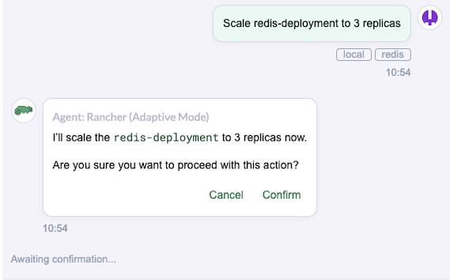
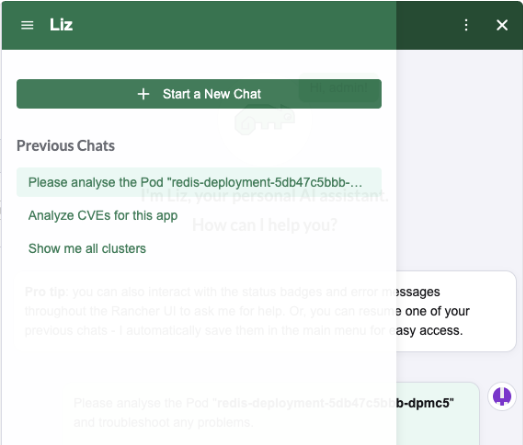
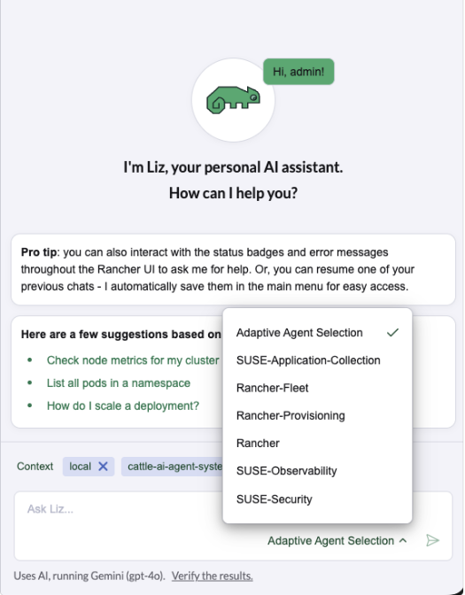

Interagindo com Liz (Assistente de IA)
Introdução a Liz
Liz inclui um assistente de IA persistente chamado Liz. Você pode abrir o assistente a qualquer momento clicando no ícone do Liz  na interface.
na interface.
Quando você abre o painel lateral, Liz o cumprimenta com sugestões com base no contexto da sua página atual. Durante uma conversa, Liz fornece:
-
Duas ações sugeridas para continuar o fluxo de trabalho atual.
-
Uma ação exploratória para aprender mais sobre tópicos relacionados.

Consciência de Contexto
Liz entende exatamente o que você está visualizando. Qualquer recurso com um distintivo de status apresenta um botão Pergunte a Liz.
-
Clique no ícone do botão deslizante Pergunte a Liz ao lado de um recurso.

-
O painel lateral será aberto com um prompt personalizado gerado automaticamente para aquele recurso específico.
-
Liz coleta automaticamente o nome do recurso, ID do cluster e namespace para fornecer ajuda precisa.

Confirmando Ações
A segurança é uma prioridade.
Se você pedir a Liz ou a um de seus Agentes especializados para modificar seu ambiente (como atualizar uma implantação ou alterar a configuração de um cluster), Liz apresentará um prompt de confirmação.

Você deve clicar em Confirmar antes que quaisquer alterações sejam aplicadas ao seu sistema.
Gerenciando Conversas
Você pode manter múltiplos tópicos ou salvar seu histórico para referência futura.
-
Criar um Novo Chat: Para iniciar uma nova sessão, clique no ícone Novo Chat.

-
Baixar Histórico: Para salvar um registro da sua conversa, clique no ícone Baixar. Isso salva um arquivo
.txtda transcrição no seu disco local.

Mudando de Agentes
Por padrão, Liz usa "Roteamento Inteligente" para enviar sua solicitação ao melhor agente especializado (por exemplo, um Agente de Segurança para vulnerabilidades).
Se você quiser falar com um agente específico manualmente:
-
Clique no ícone Seleção de Agente.

-
Escolha o agente desejado na lista.
| Se Liz notar que você usa frequentemente o mesmo agente, pode sugerir mudar para o modo manual para aquela sessão. |
Exemplos de Prompts para Tentar
Não sabe por onde começar? Tente fazer estas perguntas para a Liz:
| Configurações | Prompt do Usuário | Agente Responsável |
|---|---|---|
Segurança |
"Quais das minhas cargas de trabalho em execução estão afetadas por vulnerabilidades?" |
Agente de Segurança (busca dados de CVE e de varredura) |
Inventário |
"Liste todos os registros usados em todos os meus clusters." |
Agente Rancher (consulta recursos em todo o cluster) |
Capacidade |
"Mostre-me os 5 pods que consomem mais memória." |
Agente Rancher (consulta dados de uso de recursos) |
Navegação |
"Qual é o significado deste status?" |
Lógica de Contexto (interpreta o status dos recursos na interface) |
Solução de problemas |
"O aplicativo está lento; encontre a causa raiz." |
SUSE Observability Agent (analisa métricas e logs) |
Melhore suas habilidades |
"Como instalo um Helm chart no Rancher?" |
Conhecimento (fornece fontes de documentação) |
Aprovisionamento |
"Analise o cluster e resolva quaisquer problemas." |
Agente de Provisionamento Rancher (verifica a saúde da infraestrutura) |